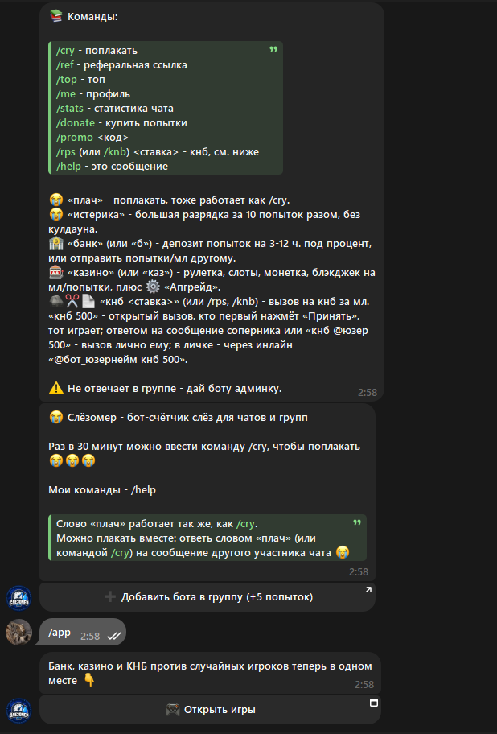

Слёзомер
@slezomer_bot ↗Бот-счётчик слёз для чатов. Раз в 30 минут можно поплакать командой /cry. А если ответить на чужое сообщение словом «плач», поплачете вместе.
В чатах и в инлайне
Можно играть в группе или вызвать бота через @slezomer_bot в строке сообщения. Есть профиль, топ и статистика чата.
Вызовы и рефералы
Камень, ножницы, бумага с участниками чата. Реферальные ссылки и промокоды.
Mini App
Банк, игровые режимы и КНБ против случайных игроков.

Команды бота
Мини-приложение открывается через /app.
/cryПоплакать/topРейтинг/meПрофиль/statsСтатистика чата/refРеферальная ссылка/appОткрыть Mini AppОстальные команды и механики
/donate покупка попыток · /promo <код> промокод · /rps или /knb камень, ножницы, бумага · /help помощь.
«Истерика» использует 10 попыток разом без кулдауна. «Банк» позволяет отправить попытки или мл другому участнику и разместить попытки на 3–12 часов. Также есть рулетка, слоты, монетка, блэкджек и апгрейд.